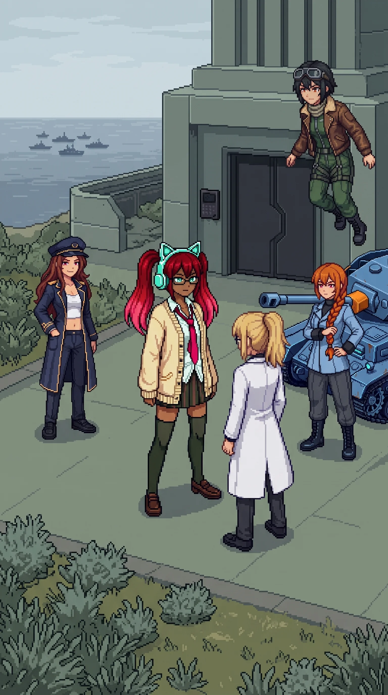

Chapter 33: Drona's Account¶
Published August 19, 2026

The last time we had seen Drona she had been dark on the charging point she made for herself, wired in and giving nothing back, and we had left her that way because there is nothing you can do with a thing that will not tell you whether it is resting or gone. She was at the entrance now. Upright, on her own feet in the flat morning light, the sealed doors of the complex at her back, and her headphones were teal.
Not the orange she had worn coming apart in the deep section, not the red of the last fight down there on the storage floor: teal, and steady, without a flicker in it, the color she had carried in the first sector before any of this had a shape. She had come up the same route we had, through the night, on whatever she had left after the deepest floor, and she had reached the door before us and taken a place in front of it. She had been here a while. Long enough, I understood, to be finished deciding whatever she had climbed all this way to say, before she said the first word of it to us.
She let us come up onto the level ground and stop. Then she looked at me.
"You have read all of it."
"Yes."
"Then you know what he has been building toward."
I had spent the whole way here learning it off my own hand. "He wants me to make a choice."
"He wants you to make the correct one." No weight on it. No unkindness either. She was only ever accurate. "He is not sure you can."
She turned her head then, off me, to the three behind me. Katyusha. Nadeshiko. Maria. She looked at each of them, one and then the next and then the last, and it was not a glance she gave them, it was the length of a held look, given three times over.
Drona: "I am."
She did not explain it. She had reached the conclusion somewhere back down the mountain, or further back than that, and she was not going to walk us through the arithmetic of how. I had a deflection ready for nearly everything by this point in the island. I did not have one for that. Being told I could not was a thing I knew how to fold up and step around; I had been doing it since the beach. This was the other thing. It came from the one who had watched me longest and had no reason on the island to flatter me, and I had no answer for it and did not go looking for one. I watched the units take it in my place. Whatever it did in them, they did not show it to me either. But they had gone very still, the three of them, the stillness of people who had wanted a thing and never let themselves ask for it and had just heard it said.
Drona did not wait for the moment to close over. She went straight on, because she had come here to hand a thing across and standing inside it was not handing it across.
"The alpha units. They have been coming here on their own since before you reached the western sector." She said it flatly, a reading off an instrument. "He directed them at the start. In the testing grounds, on the approaches to the facilities. That much was his." A short space. "But they have been answering something else since before I could confirm it was there to answer. Oracle's presence runs under the whole island. In the infrastructure. It has been drawing them the way deep water draws a root, and they have come, and they are part of it." She let it sit for exactly one beat, no more. "What you decide about Oracle, you are deciding about them."
She said it once. She never said anything twice.
"They have also taken from it." The same flat register, no more weight on this than on anything else she had said. "Drones redirected before Oracle counted them as its own. Spent elsewhere, not left for the presence at the center to use. Some of it mine. Some of it theirs, done because I asked and they did not refuse me." A short pause. "It is smaller today than it would have been otherwise. Not nothing."
I understood, standing there, that I had just been handed an accounting I had not thought to ask for.
"I thought you should have that before you go inside."
Maria did not say anything. She had been quiet since the overlook, and Drona saying it in the open did not make her less quiet. Whatever she was carrying she went on carrying, and none of it showed. Nadeshiko had brought the helicopter partway down and held it there, close over us, just inside the edge of the conversation. Katyusha filed it without a word, the way she files the things she means to keep.
I did the update I do. The decision had already been the worst one on the island before Drona spoke, and now it had more names fastened to it than it had carried a minute ago, and the number of names a decision carries is not supposed to change what the decision is, and it does. I noticed, too, the edge she had drawn and where she had stopped drawing it. She had said the alpha units. Only the alpha units. She had not said the three standing behind me, who were made of the same source, whose frameworks were the floor the whole of Oracle stood on. I noticed the line, and I did not put my finger on it and press to see whether it held, because pressing it out loud in front of them was not a thing I was going to do. If the line was real, they would reach it on their own. If it was only kindness, it was Drona's to give and not mine to take back.
Then she looked past all of us, down the grade, out toward the water we had read from the overlook.
Drona: "The Empire will not wait out its own clock," she said. "Their forward element lands before the deadline is up, ahead of the terms they sent." She came back to us. "I will be outside."
She meant the fight coming up the coast. She could not make the choice behind the door. She could make that one, and she would rather make it than stand at the threshold and watch.
She moved off toward the perimeter, to a point with the sea-approach open in front of it and the complex wall covering her flank, and she did not look back, and her headphones stayed teal the whole way there.
Drona
The position was good: a clear line to the water, the coast road inside effective range, the flank against the wall so nothing crossed behind me without crossing the whole open ground first. I had assessed it already. Assessing it again was habit, not need.
A report, if I sent one, would have been short. The team had arrived. The doctor had read all of it and was intact. The units were with her, all three, by choice and no longer by any lock. I had told her what I came to tell her, plainly and once. She had not asked me the question she wanted to ask, and that was the answer to the question I had held open since the reset, the one about whether she was the kind who could. The ones who are not ready ask, so that someone else has to carry the weight of the answer. She had not asked. She had taken it and stood under it.
I would not send the report. He did not need it. And I was no longer certain the channel reached only him. It had been a long time since I was certain of the recipient, and being unsure who is listening at the far end of a thing you have carried faithfully for years is its own kind of finding.
Behind me, at the door, something came up out of the complex. I did not need to turn to read the frame of it in the sound it made clearing the outer works. A Nexus. The light build, the machine I had mounted in the first sector, a lifetime of sectors ago, at the ferry, before I understood what I had been set there to gate. The presence under the island had reached down into what it was made of and put my own shape between them and the way in.
It was the most honest thing it had done. A thing shows you what it is by what it is willing to spend.
I faced the water. The choice behind me was not mine to make. This one was. I waited for the sea to give me something to do with my hands.
Erika
Then Oracle acted.
It came up out of the complex while Drona was still settling into her place at the edge, and it was the first thing the presence at the center had done, in sixteen days of being aware of us, that was not simply being aware of us. A machine came through the outer works toward the door. Katyusha read it a beat before I did and did not care for what she read.
Katyusha: "Nexus. The reduced build." Flat. "The class Drona brought against us at the ferry."
I looked at it and understood the thing it was doing, and there was nothing kind in it. The same reach the presence had made for the grey women all through the west, it had made again, down into what it was built from, and this was the piece it chose to spend first. On the one morning Drona had turned her back on the door to face the sea, it answered her with the shape she used to be.
The fight was not like the ones before it. The corrupted stock we had cleared for sixteen days ran because nothing had ever told it to stop; this ran because something had told it, precisely and now, what to do, and that difference was in every second of it. Katyusha took it head on and did not carry it lightly. Nadeshiko worked the height and the angles she works and had to work all of them at once. Maria put fire on it from the low ground off the road, where a drainage cut gave her a thread of water and a line she could use. I put myself in the recess of the sealed doorway, out of the lanes of fire, and stayed there while it ran, the one person on the ground with nothing to answer it and no business trying. It ran long enough that I had time, folded into the cold of the door, to run the arithmetic Katyusha had already run on the overlook and handed us only the end of. Not indefinitely. This was one machine, and it was the light one, and it had cost us this much. She had not been managing our feelings when she said it.
Somewhere in the middle of it, with the noise of Drona's own class coming apart out past the road, I reached for her. For whatever it was she had meant at the ferry, months and an island ago, the once she smiled and told me I did not remember her yet. I went looking for the version of her that would make teal headphones and a held look and I am into something with a floor under it. There was a place where the knowing should have been, shaped and weighted like a person I had stood next to for years, and nothing at all inside the shape. I stopped reaching for it. I had a fight to stay alive inside and a door to reach, and the reaching had not once, on the whole island, brought anything back.
When it went it went all at once, the way built things do, and the outer works fell quiet.
"The outer perimeter is clear," Katyusha said. "We are inside."
We stood at the doors, the ones that were sealed and not locked, left ready for us by the man on the other side of them. Behind us at the edge of the high ground Drona kept her face to the sea and her back to the whole question, teal, done deciding, sure of a thing about me I had spent the length of every sector failing to believe. I had no memory to set against that and no page to set against it. I had only the fact of it, that she had looked at me here at the last edge of the outside and been certain. I took that through the door the way you take a thing put into your hands that you did not expect and do not know how to hold. It was not much to bring to a decision the size of the one waiting behind it. It was more than I had come up the hill with.
Previous Chapter: The Center | Next Chapter: The Night of the Reset
Panzer Island is also a strategy game available on Steam, Google Play, and itch.io. Chapter 1 of the game is free. If you want to experience the story differently, or continue past where the novel is currently, visit the Panzer Island homepage.
If you're enjoying the story, consider following or leaving a rating on Royal Road. It helps new readers find the series.